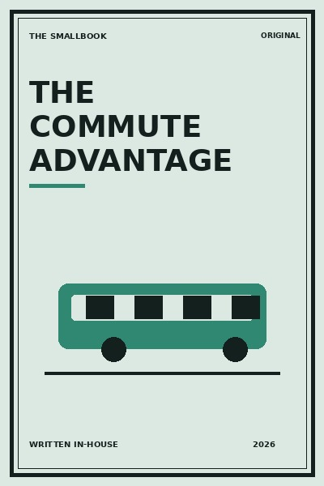

Library › Productivity
The Commute Advantage - Summary & Key Lessons

Travel time can become a gentle transition, a place for noticing, learning and recovery, rather than a daily tax.
📖 OPEN THE FULL INTERACTIVE BREAKDOWN →🌐 Read it in Hindi, Hinglish, Gujarati, Tamil & 22 more languages, with audio.
💡 The Big Idea
Travel time can become a gentle transition, a place for noticing, learning and recovery, rather than a daily tax. The lessons below are designed to be used slowly: read one, try it in a real situation, and return with evidence rather than agreement.
🧠 The 8 Key Lessons
Lesson 1: Claim the Transition
Chapter 1: Claim the Transition
A commute separates roles. Treat it as a buffer that lets you arrive at work and home with intention. Travel time can become a gentle transition, a place for noticing, learning and recovery, rather than a daily tax. The useful question is not whether this is perfectly true in every situation, but what it helps you notice before you act. Most people skip this step because the visible task feels urgent. The book asks you to slow down long enough to identify the constraint, trade-off or relationship underneath the task. Once that is clear, a smaller and more reliable move becomes possible. Repeated over time, that move changes the system rather than merely decorating the surface of it.
📖 Example: A nurse uses the first five minutes after a shift to breathe and write one sentence before entering family life. The point is not to copy the situation exactly. Notice the sequence: make the hidden condition visible, choose the next action that respects it, and then observe what happens. That turns a memorable story into a testable practice instead of a slogan. Read the full example →
⚡ Do this: Pick one small ritual for the first five minutes of your commute.
Lesson 2: Design for Your Energy
Chapter 2: Design for Your Energy
Not every commute should be productive. Match the activity to the energy you actually have. Travel time can become a gentle transition, a place for noticing, learning and recovery, rather than a daily tax. The useful question is not whether this is perfectly true in every situation, but what it helps you notice before you act. Most people skip this step because the visible task feels urgent. The book asks you to slow down long enough to identify the constraint, trade-off or relationship underneath the task. Once that is clear, a smaller and more reliable move becomes possible. Repeated over time, that move changes the system rather than merely decorating the surface of it.
📖 Example: On a crowded train, a manager listens to a calming playlist instead of forcing a difficult course. The point is not to copy the situation exactly. Notice the sequence: make the hidden condition visible, choose the next action that respects it, and then observe what happens. That turns a memorable story into a testable practice instead of a slogan. Read the full example →
⚡ Do this: Choose one low-energy and one high-energy commute option.
Lesson 3: Build a Tiny Syllabus
Chapter 3: Build a Tiny Syllabus
Small repeated lessons compound when the material has a clear sequence. Travel time can become a gentle transition, a place for noticing, learning and recovery, rather than a daily tax. The useful question is not whether this is perfectly true in every situation, but what it helps you notice before you act. Most people skip this step because the visible task feels urgent. The book asks you to slow down long enough to identify the constraint, trade-off or relationship underneath the task. Once that is clear, a smaller and more reliable move becomes possible. Repeated over time, that move changes the system rather than merely decorating the surface of it.
📖 Example: A learner listens to one chapter of a language course each week and practises three phrases at home. The point is not to copy the situation exactly. Notice the sequence: make the hidden condition visible, choose the next action that respects it, and then observe what happens. That turns a memorable story into a testable practice instead of a slogan. Read the full example →
⚡ Do this: Choose a four-week topic and save only the first lesson.
Lesson 4: Use Friction as a Cue
Chapter 4: Use Friction as a Cue
Delays can trigger a useful default instead of irritation. Travel time can become a gentle transition, a place for noticing, learning and recovery, rather than a daily tax. The useful question is not whether this is perfectly true in every situation, but what it helps you notice before you act. Most people skip this step because the visible task feels urgent. The book asks you to slow down long enough to identify the constraint, trade-off or relationship underneath the task. Once that is clear, a smaller and more reliable move becomes possible. Repeated over time, that move changes the system rather than merely decorating the surface of it.
📖 Example: When traffic stops, a driver asks one reflective question rather than opening social media. The point is not to copy the situation exactly. Notice the sequence: make the hidden condition visible, choose the next action that respects it, and then observe what happens. That turns a memorable story into a testable practice instead of a slogan. Read the full example →
⚡ Do this: Write one question you can return to when delayed.
Lesson 5: Protect the Return Journey
Chapter 5: Protect the Return Journey
The journey home needs decompression more than optimisation. Travel time can become a gentle transition, a place for noticing, learning and recovery, rather than a daily tax. The useful question is not whether this is perfectly true in every situation, but what it helps you notice before you act. Most people skip this step because the visible task feels urgent. The book asks you to slow down long enough to identify the constraint, trade-off or relationship underneath the task. Once that is clear, a smaller and more reliable move becomes possible. Repeated over time, that move changes the system rather than merely decorating the surface of it.
📖 Example: A parent uses the last station to decide what kind of presence the family needs that evening. The point is not to copy the situation exactly. Notice the sequence: make the hidden condition visible, choose the next action that respects it, and then observe what happens. That turns a memorable story into a testable practice instead of a slogan. Read the full example →
⚡ Do this: Choose a homeward ritual that marks the end of work.
Lesson 6: Carry a Pocket Notebook
Chapter 6: Carry a Pocket Notebook
Good ideas arrive in transit and leave quickly. Capture, do not solve, them. Travel time can become a gentle transition, a place for noticing, learning and recovery, rather than a daily tax. The useful question is not whether this is perfectly true in every situation, but what it helps you notice before you act. Most people skip this step because the visible task feels urgent. The book asks you to slow down long enough to identify the constraint, trade-off or relationship underneath the task. Once that is clear, a smaller and more reliable move becomes possible. Repeated over time, that move changes the system rather than merely decorating the surface of it.
📖 Example: A shop owner records customer observations as short voice notes and reviews them once a week. The point is not to copy the situation exactly. Notice the sequence: make the hidden condition visible, choose the next action that respects it, and then observe what happens. That turns a memorable story into a testable practice instead of a slogan. Read the full example →
⚡ Do this: Keep one capture method that works without a desk.
Lesson 7: Make It Safer and Kinder
Chapter 7: Make It Safer and Kinder
The best commute practice respects safety, awareness and other people. Travel time can become a gentle transition, a place for noticing, learning and recovery, rather than a daily tax. The useful question is not whether this is perfectly true in every situation, but what it helps you notice before you act. Most people skip this step because the visible task feels urgent. The book asks you to slow down long enough to identify the constraint, trade-off or relationship underneath the task. Once that is clear, a smaller and more reliable move becomes possible. Repeated over time, that move changes the system rather than merely decorating the surface of it.
📖 Example: A pedestrian keeps one ear free and chooses daylight routes rather than disappearing into audio. The point is not to copy the situation exactly. Notice the sequence: make the hidden condition visible, choose the next action that respects it, and then observe what happens. That turns a memorable story into a testable practice instead of a slogan. Read the full example →
⚡ Do this: Set one safety rule for any listening or phone use while travelling.
Lesson 8: Measure the Feeling
Chapter 8: Measure the Feeling
The test is not how much content you consume but whether you arrive better. Travel time can become a gentle transition, a place for noticing, learning and recovery, rather than a daily tax. The useful question is not whether this is perfectly true in every situation, but what it helps you notice before you act. Most people skip this step because the visible task feels urgent. The book asks you to slow down long enough to identify the constraint, trade-off or relationship underneath the task. Once that is clear, a smaller and more reliable move becomes possible. Repeated over time, that move changes the system rather than merely decorating the surface of it.
📖 Example: A student notices that news first thing raises anxiety while a short walk lowers it. The point is not to copy the situation exactly. Notice the sequence: make the hidden condition visible, choose the next action that respects it, and then observe what happens. That turns a memorable story into a testable practice instead of a slogan. Read the full example →
⚡ Do this: For a week, rate your arrival energy from one to five and adjust one habit.
✅ 5-Step Action Plan
- Pick one small ritual for the first five minutes of your commute.
- Choose one low-energy and one high-energy commute option.
- Choose a four-week topic and save only the first lesson.
- Write one question you can return to when delayed.
- Choose a homeward ritual that marks the end of work.
⚠️ When This Doesn't Work
A book can offer a useful lens, not a universal rule. Your money, health, family duties, workplace power and access to support change what is possible. Keep the principle, adapt the practice, and ask for expert help where the stakes are high.
💀 The Graveyard Proves It
💬 Best Quotes from The Commute Advantage
- “Travel time can become a gentle transition, a place for noticing, learning and recovery, rather than a daily tax.”
- “Small, honest experiments are more useful than impressive intentions.”
- “A good idea becomes valuable only when it changes the next choice.”
Interactive version: mark lessons as read, listen in your language, share quote cards.